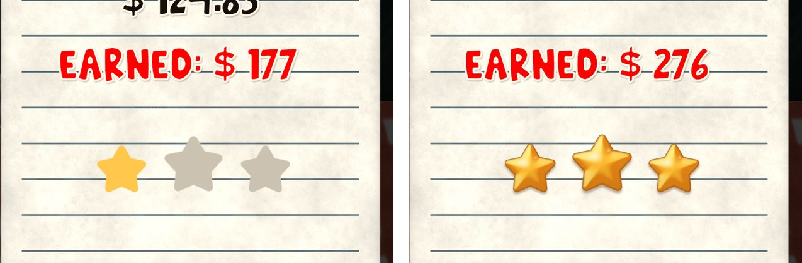
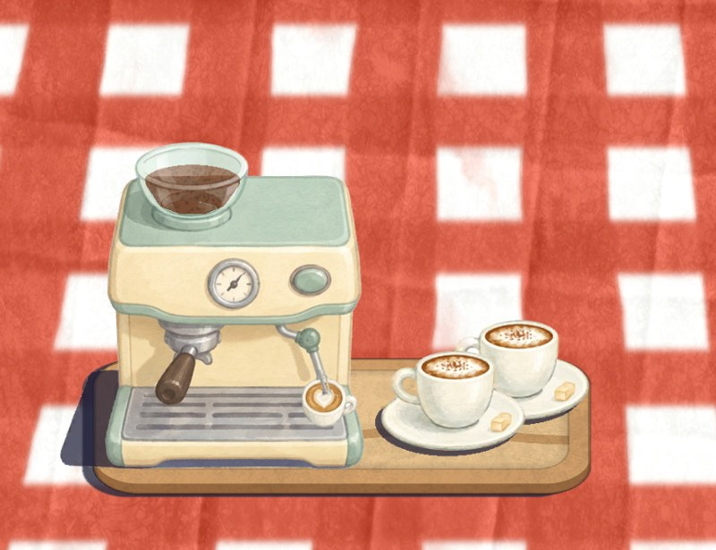
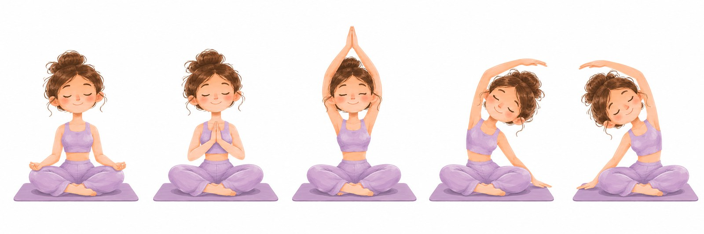
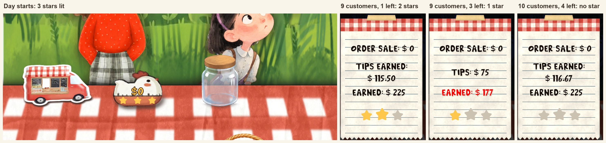

Food Truck Cafe
Your report for 14 November. 26.11.13 is live; 26.11.21 (build 28) is waiting for Apple's review; test build 30 is on TestFlight; fixes from your 4:30 PM play are in Current, not in a build yet.


1Next
You
Test build 26.11.21 (30) is on TestFlight, ready to install since 14 November, 13:27 PST.
In it: the new star rule (check it in Current), your foaming sound (Pixabay number 1, cut to 1.3 seconds and quieter), pop, blender and coin at the middle volume, the working Remove Ads tab.
At Apple: 26.11.21 with build 28 is waiting for review. This weekend's release replaces it.
New in Current, from your play of build 30 (no build made): the hen's stars fixed, 1 star at more than half, 3D stars popping onto the receipt, the coffee machine upgrade, pour and cash sounds quieter. Each has a "Good to ship" box.
Also in Current: the yoga lady's sitting poses from ChatGPT, two sheets to pick from.
In Q&A: your 1 star on day 1; the truck button and the swipe.
Me
Build the kitchen swipe try-out you asked for (button stays, swipe added). Next build only on your word. Then: your choice on how 3 stars becomes reachable (star card).
2Q&A
You asked: day 1, one order missed, only 1 star. Do you have logs?
- Logs: the game records a day's stars and money, not each customer. Your phone's records after the day started (4:31 PM) have not reached Unity yet, so I cannot see that day's end.
- Found by replaying day 1: a real fault in the stars under the hen. They were worked out from the customers so far only. First customer lost: no star. One lost among the first four: 1 star. Two stars came back only after four were served. Fixed, first card in Current.
- The day-end result was already right: one lost of 8 or 9 customers ends on 2 stars. If your 1 star was on the receipt, the game counted two lost. A customer who leaves with part of the order counts as lost.
- The receipt can show the count ("Served 7 of 9") so you can check it yourself: box in the star card.
You asked: the truck button when something runs low, and what a swipe instead of the button would mean.
Making the button remind you. The game already knows when a food is at zero. Ideas, tick what you want:
A swipe instead of the button: what it means.
- The reminder: a swipe shows nothing on screen, so it cannot remind you. Whatever reminds the player still has to be drawn somewhere. That is the main reason not to drop the button.
- New players: a swipe is invisible. The numbers show new players leaving within a minute; they would never find the kitchen without a tutorial step and a hint on screen.
- Mistakes in a rush: the game is fast tapping. A finger that slides while tapping would open the kitchen by accident and cost time. During the arrangement phase items are dragged, so the swipe must be off there or it fights with moving things.
- Feel: it would make the kitchen feel like a second room beside the table, sliding in and out. That is the nice part, and good for one-handed play.
- Phone edges: iPhone keeps the bottom edge for itself (home). A swipe from the side or across the cloth is fine.
- Work: a gesture reader with a clear threshold, a slide between table and kitchen, both tutorials changed (they say "tap the truck"), the store video shows a tap. A few days, with testing on a phone.
- Other players: some people find buttons easier than gestures; a button stays friendlier.
3Current
Stars under the hen during the day: fixed, 14 November. They now show what the day will end on if everyone still to come is served. One customer lost early shows 2 stars at once, not 0 or 1. The day-end stars are unchanged.

Replayed in the editor: 2 stars shown from the first loss to the end of the day, 1 star when a second customer was lost; shown, rule and saved agree.
Receipt stars: 3D, popping in one by one, 14 November. Three sockets pressed into the paper; each earned star pops in with a small turn, a pop sound and a light tap.


Coffee machine upgrade: now always two cups, 14 November. The upgrade did work, but only with an empty tray. With one cup still on the tray (it holds two) the machine brewed one, which is when you tap it. The shop card says "two cups per brew".
Now it always brews two. If the tray has room for one, the second cup waits on the machine and moves to the tray the moment you serve a cup. No new brew while a cup waits.

Checked in the editor: empty tray gives two cups; one cup on the tray gives two plus one waiting; a tap while it waits does nothing; serving one cup brings the waiting one over.
Coffee pour and order-complete cash sound: quieter, 14 November. Both 6 dB down (my choice of amount). The cash sound now sits at the coin's level.
| Sound | Before | After |
|---|---|---|
| Coffee pour | ||
| Order complete |
Yoga lady sitting poses, ChatGPT, 14 November. Five poses for the loop: hands on knees, palms together, arms up, bend right, bend left. ChatGPT drew two sheets. Nothing is in the game; no feature code is written.

Both: her head is bigger and rounder than on her standing sprite, so she reads a little younger. Both sit on one ground line with the same seat height.
New star rule, in build 30 (the 1-star line changed after it). Please check it, 14 November. Stars come from customers served, not from money:
- 3 stars: every customer of the day got their whole order.
- 2 stars: 90 % of them did, rounded to a whole customer, a half down (9 customers: 8; 10: 9; 15: 13).
- 1 star: more than half of them did (your words, 14 November evening; it replaces my 70 %). Exactly half or fewer: none.
- A customer counts when the order closes: served whole, or gone (also when gone with part of the order).
- The three stars under the hen are lit when the day starts and show what the day will end on if everyone still to come is served (fixed today, first card).

What I checked: the rule's numbers against a table for 1 to 19 customers; seven played days, where the stars shown, the rule and the stars saved for the day agreed every time.
Can every day reach 3 stars? Measured: not as the days are now. Two automatic players, chapter 1, the game's own counters, no candies. The steady one acts about every second and a half. The fast one acts several times a second and had time to spare; it is the best case.
| Day | Steady: customers | lost | stars | Fast: customers | lost | stars |
|---|---|---|---|---|---|---|
| 1 | 9 | 1 | 2 | 8 | 2 | 1 |
| 2 | 9 | 3 | 1 | 9 | 2 | 1 |
| 3 | 9 | 1 | 2 | 12 | 1 | 2 |
| 4 | 9 | 2 | 1 | 10 | 2 | 1 |
| 5 | 9 | 2 | 1 | 11 | 0 | 3 |
| 6 | 10 | 2 | 1 | 14 | 1 | 2 |
| 7 | 9 | 2 | 1 | 12 | 2 | 1 |
| 8 | 11 | 2 | 1 | 14 | 2 | 1 |
| 9 | 11 | 3 | 1 | 14 | 2 | 1 |
| 10 | 13 | 1 | 2 | 15 | 2 | 2 |
| 11 | 12 | 4 | 1 | 15 | 1 | 2 |
| 12 | 13 | 2 | 1 | 16 | 1 | 2 |
Even the fast player served everyone on one day of twelve. The cause is waiting, not tapping: an order waits 7 seconds (6 and 5 later on), a coffee takes almost 6 to brew, and the tray holds two cups, so a third coffee in a row is lost almost by design. So "3 stars must be possible on every level" does not hold yet. Ways to make it hold, yours to choose:
Chapter 2 is not measured yet; its measuring tool is out of date and I bring it up to date next.
The day-end receipt does not say how many customers were served. Want a line there?
4MVP
Your words, 14 November: "we will do another release this weekend"; Remove Ads goes out then; new star rule: 3 stars = every customer served their whole order, 2 stars = 90 %, 1 star = more than half.
5Backlog
Empty. Cleaned up on your word, 14 November; nothing was ticked.
6Analysis, 9 to 13 November
Read 13 November, 15:00 PST. Days are UTC; the 13th is not over and its ad numbers are not in. Players and ads from Unity. App Store Connect is signed out in Chrome, so Apple's downloads and page views wait for your sign-in.
| Day | New players | Finished the tutorial | Days finished | Ad requests | Ads shown | Ad revenue |
|---|---|---|---|---|---|---|
| Sun 9 | 1 | 1 | 3 | 0 | 0 | $0 |
| Mon 10 | 2 | 2 | 0 | 9 | 2 | under $0.01 |
| Tue 11 | 1 | 1 | 1 | 4 | 1 | under $0.01 |
| Wed 12 | 0 | 0 | 0 | 2 | 0 | $0 |
| Thu 13 | 1 | 0 | 0 | |||
| Five days | 5 | 4 | 4 | 15 | 3 | under $0.01 |
| Week before, 2 to 8 Nov | 6 | 1 | 0 | 14 | 3 | $0.05 |